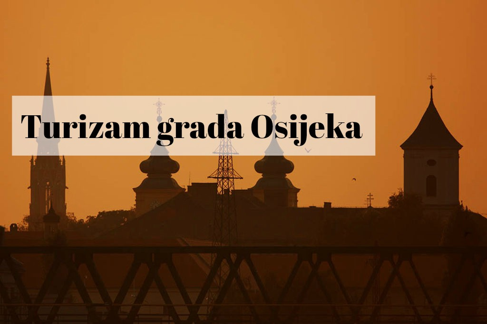

Turistička ponuda grada Osijeka uistinu je posebna! Raznolikošću i bogatstvom kulture, vrijednim povijesnim lokacijama, prekrasnim parkovima, očuvanom i zaštićenom prirodom u neposrednoj blizini grada te gastronomskim posebnostima Osijek je, na svoj način, jedinstven. Specijalitete slavonske kuhinje možete kušati u poznatim osječkim restoranima, odmoriti se u lijepo uređenim hotelima, motelima i pansionima ili pak prošetati osječkom promenadom. Ali, nikako ne smijete zaobići Tvrđu, staru gradsku jezgru, po vrijednosti, nemjerljiv povijesni dragulj. Naime, kasnosrednjovjekovni Osijek izgrađen je na širem području današnje Tvrđe.
Tvrđavu su, po uzoru na nizinske nizozemske utvrde, austrijske vlasti planski gradile od 1. kolovoza 1712. do 1722. kada je, uglavnom, dovršena, iako su gradnje manjega opsega nastavljane do 60-ih godina 18. stoljeća. U Tvrđi su 1729. otvoreni gimnazija, tiskara (1735.) i njemačko kazalište, a proveden je i javni vodovod i kanalizacija, pa su s pravom Slavonci i Osječani Tvrđu nazivali “Metropolis urbs”. Danas je osječka Tvrđa, po povijesnim i graditeljskim značajkama, spomenik nulte kategorije.
Grad Osijek kao grad bogate povijesne i kulturne tradicije zajedno s Turističkom zajednicom grada Osijeka radi na obogaćivanju turističke ponude grada kroz oživljavanje projekata koji će vratiti zatomljenu osječku gradsku tradiciju. U proteklome razdoblju Grad je iz svoga proračuna izdvojio znatna financijska sredstva kako bi se određeni projekti mogli realizirati.